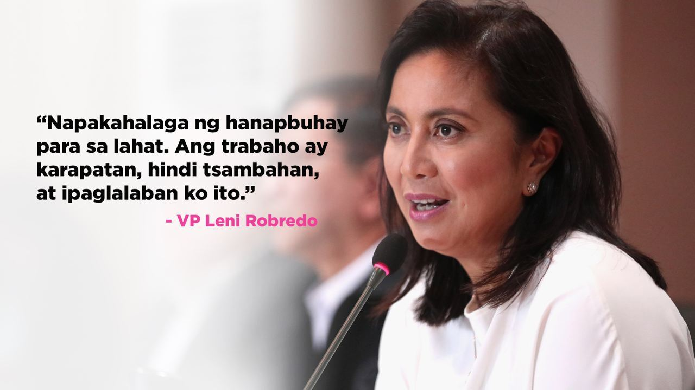

Leni Robredo
Maria Leonor "Leni" Gerona Robredo | Vice President
General Information
- 14th Vice President of the Philippines (2016-present)
- Representative of Camarines Sur's 3rd district last 2013
- Ran for the 2022 presidential elections as an independent candidate
History
- Earned economics degree from UP Diliman in 1986, studied law in University of Nueva Caceres in 1992, and passed bar exams in 1997
- Became a researcher for the Bicol River Basin Development Program (BRBDP)
- Served in Public Attorney's Office in 1997
- Was a coordinator of Sentro ng Alternatibong Lingap Panligan (SALIGAN) in 1998-2008
- Founded Lakas ng Kababaihan ng Naga Federation in 1989
- Became chairperson of the Liberal Party in Camarines Sur in 2012
- Became Vice President of the Philippines in 2016, narrowly defeating Bongbong Marcos by 0.64%
- Ran for the 2022 presidential elections as an independent candidate, with Francis Pangilinan as her vice presidential running mate
Gallery
